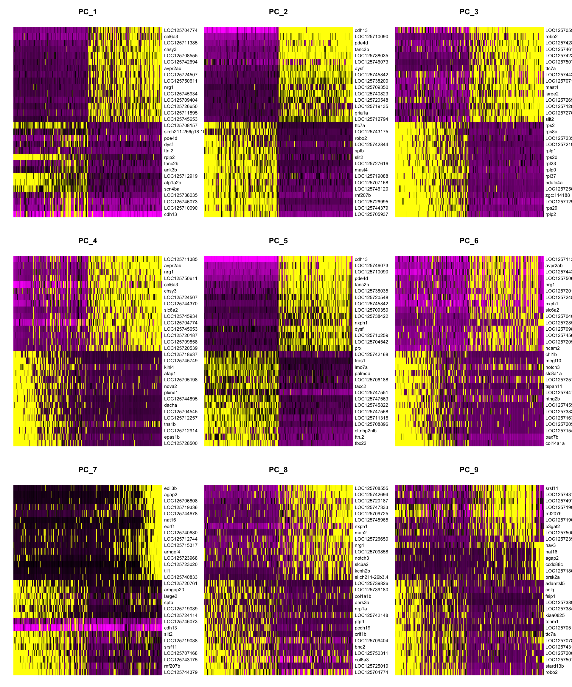
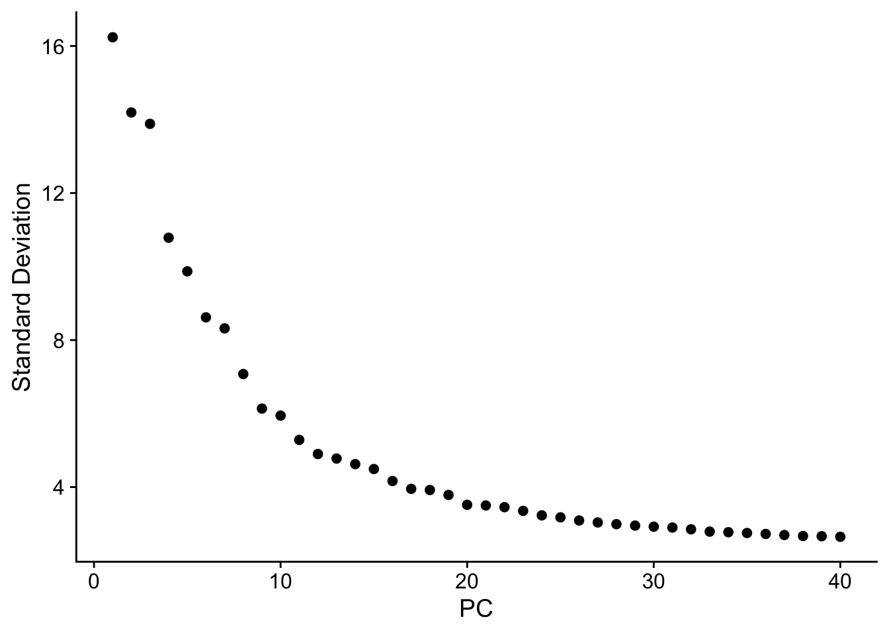
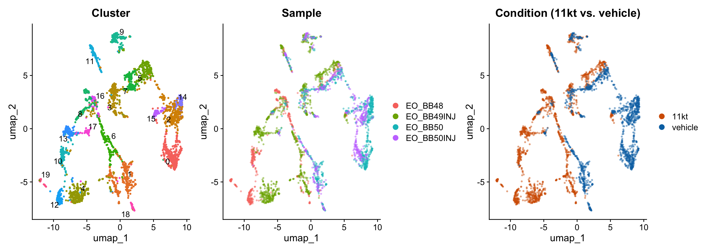
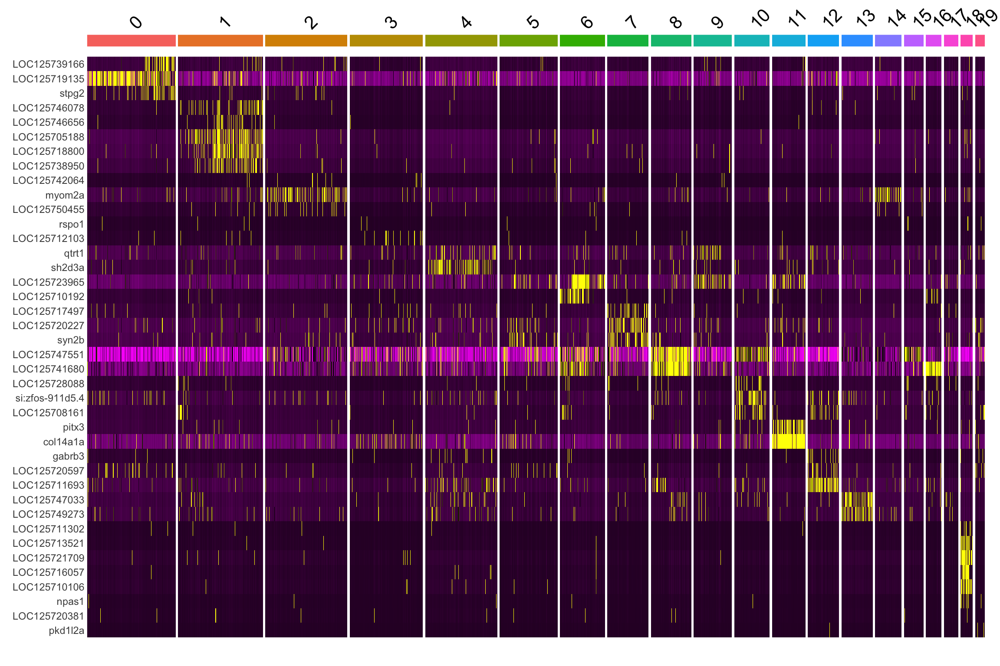
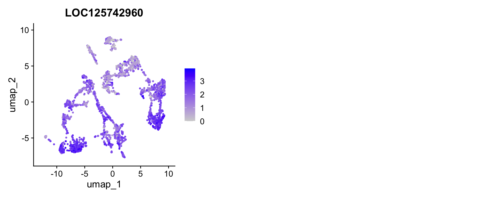
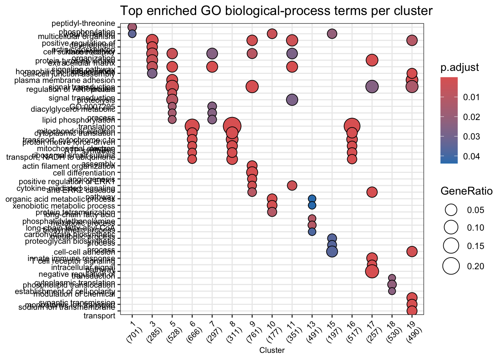
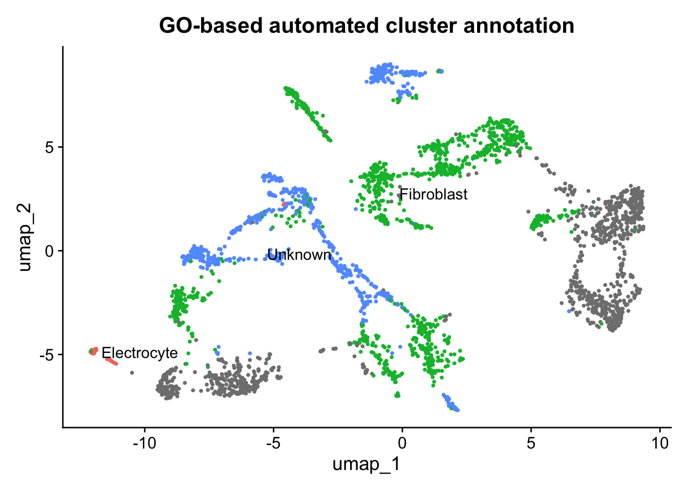

library(Seurat)
library(tidyverse)
library(patchwork)
library(glmGamPoi)
library(presto)
library(clusterProfiler)
library(GO.db)Normalization, Dimensionality Reduction, and Clustering
NoteQuestions
- Why do we need to normalize single-nucleus RNA-seq count data?
- What is principal component analysis, and why is it used before clustering?
- How are cell clusters identified computationally, and what does “resolution” control?
- How do we distinguish biologically meaningful clusters from technical artifacts?
TipObjectives
- Merge individual per-sample Seurat objects and annotate cells with experimental condition metadata.
- Normalize count data using SCTransform to remove sequencing-depth variation.
- Interpret a PCA elbow plot to select the number of principal components for downstream analysis.
- Identify cell clusters using a graph-based Louvain algorithm.
- Visualize cells in UMAP space and color by cluster, sample, and experimental condition.
Setup
Load the data
We reload the raw 10X count matrices for each midbrain sample, following the same approach used in the QC episode.
tissue <- "EO"
sample_names <- c("BB48", "BB49INJ", "BB50", "BB50INJ")
# Empty list to store one Seurat object per sample
list_seurat <- list()
for (sample in sample_names) {
data_dir <- file.path("data/ssrnaseq_data", tissue, sample)
seurat_data <- Read10X(data.dir = data_dir)
seurat_obj <- CreateSeuratObject(
counts = seurat_data,
min.features = 1,
project = paste0(tissue, "_", sample)
)
list_seurat[[sample]] <- seurat_obj
}Merge samples and annotate experimental conditions
Before normalizing, we merge all four samples into a single Seurat object and immediately record which experimental condition each cell belongs to. This metadata travels with every cell through all downstream steps and is essential for interpreting your results.
# Merge into one object; add.cell.id prefixes each barcode with its sample name
# to prevent collisions across samples
merged_seurat <- merge(
x = list_seurat[[1]],
y = list_seurat[2:length(list_seurat)],
add.cell.id = names(list_seurat)
)
# In Seurat v5, layers must be joined before downstream analysis
merged_seurat <- JoinLayers(merged_seurat)
# Assign experimental condition to each cell based on orig.ident
# BB48 and BB49INJ were implanted with 11-ketotestosterone (11kt) for 4 days
# BB50 and BB50INJ received a vehicle (cocoa butter) implant for 4 days
condition_map <- c(
"EO_BB48" = "11kt",
"EO_BB49INJ" = "11kt",
"EO_BB50" = "vehicle",
"EO_BB50INJ" = "vehicle"
)
merged_seurat$condition <- unname(condition_map[merged_seurat$orig.ident])
# Inspect the metadata to confirm the assignment looks right
head(merged_seurat@meta.data) orig.ident nCount_RNA nFeature_RNA condition
BB48_AAACGATGTTTGAGAG-1 EO_BB48 1813 930 11kt
BB48_AAACTCCGTCAGTAAG-1 EO_BB48 2725 1169 11kt
BB48_AAAGGTTGTCTTGCGA-1 EO_BB48 7636 2447 11kt
BB48_AAAGGTTGTTGACGGG-1 EO_BB48 3173 1523 11kt
BB48_AACAGGCGTAGCTCCA-1 EO_BB48 1588 691 11kt
BB48_AACAGGCGTTGAAGGC-1 EO_BB48 2841 1082 11kt
NoteExperimental design: 11-KT vs. vehicle
This dataset captures two biological conditions:
- 11kt: Animals received a slow-release 11-ketotestosterone implant. 11-KT is the dominant androgen in teleost fish and is known to lengthen the electric organ discharge (EOD) duration.
- vehicle: Animals received an inert cocoa butter implant with no steroid.
Storing condition as metadata now means we can color UMAP plots, run differential expression tests, and check for batch effects throughout the rest of the analysis with a single column name.
Normalization with SCTransform
Raw UMI counts vary across cells partly because of real biology (some cell types transcribe more RNA) and partly because of technical noise (cells were captured and sequenced at different depths). Normalization removes the technical component so that downstream comparisons reflect biology.
We use SCTransform, which fits a regularized negative binomial regression model to each gene. The residuals from this model are variance-stabilized and depth-corrected, and they replace the raw counts as the working expression matrix (stored in a new SCT assay).
merged_seurat <- SCTransform(merged_seurat, verbose = FALSE)
NoteWhat about mitochondrial gene regression?
Many single-cell tutorials (including the CCR tutorial this lesson follows) regress out the percentage of mitochondrial reads (percent.mt) during SCTransform. High mitochondrial content often flags dying or damaged cells.
In mormyrid fish, mitochondrial genes do not follow the standard ^mt- prefix used in mouse and human datasets. Before regressing, you would need to identify the correct prefix in your feature table (features.tsv.gz) and recalculate PercentageFeatureSet() accordingly. We skip this step here to keep the lesson focused — it is worth revisiting for a production analysis.
ImportantInspect the SCT assay
After running SCTransform, the Seurat object now has two assays: RNA (raw counts) and SCT (normalized residuals).
- How many variable features did SCTransform select? (Hint:
length(VariableFeatures(merged_seurat))) - How does the
SCTdata slot differ from theRNAcounts slot? (Hint: comparemerged_seurat[["RNA"]]$counts[1:5, 1:3]withmerged_seurat[["SCT"]]$scale.data[1:5, 1:3])
TipSolution
# Number of variable features
length(VariableFeatures(merged_seurat))
# SCTransform typically selects ~3,000 variable features by default
# Raw RNA counts (integers, depth-variable)
merged_seurat[["RNA"]]$counts[1:5, 1:3]
# SCT scaled data (continuous residuals, variance-stabilized)
merged_seurat[["SCT"]]$scale.data[1:5, 1:3]The SCT scale data values are no longer integers — they are Pearson residuals centered near zero. Genes expressed at higher levels than expected for a cell’s sequencing depth get positive residuals; lower-than-expected expression gives negative residuals.
Principal component analysis (PCA)
Even after selecting ~3,000 variable features, analyzing all genes simultaneously is computationally expensive and noisy. PCA compresses this high-dimensional space into a small number of principal components (PCs), each a weighted combination of genes that captures a distinct axis of variation in the data.
merged_seurat <- RunPCA(merged_seurat, verbose = FALSE, assay = "SCT")Visualize PC loadings
DimHeatmap shows which genes drive each PC. Real biological signal tends to produce clean, polarized heatmaps; noisy PCs show less structure.
DimHeatmap(merged_seurat, dims = 1:9, cells = 500, balanced = TRUE, ncol = 3)
Elbow plot: how many PCs to use?
The elbow plot ranks PCs by the amount of variance they explain. The goal is to include PCs that carry biological signal while excluding those that are dominated by noise. Look for the “elbow” — the point where the curve flattens — and choose a cutoff just before it.
ElbowPlot(merged_seurat, ndims = 40)
NoteReading the elbow plot
There is no single correct answer. Common practice:
- Use enough PCs that the elbow is comfortably included (typically 15–30 for most datasets).
- Err on the side of more PCs — including a few extra noisy PCs rarely hurts, but dropping informative ones can merge biologically distinct clusters.
- For this dataset we use 25 PCs in the steps below.
ImportantChoose your own PC cutoff
Look at the elbow plot above.
- Where do you think the “elbow” falls for this dataset?
- Re-run
FindNeighborsandFindClusters(next section) withdims = 1:15instead ofdims = 1:25. Does the number of clusters change?
TipSolution
The elbow for this dataset typically falls around PC 20–30, where the curve visibly flattens. Using dims = 1:15 may merge some clusters that are separated with more PCs, particularly for rarer cell types. There is no universally correct answer — the choice should be informed by biological expectations and reproducibility across a range of values.
Graph-based clustering
Seurat clusters cells using a two-step approach:
FindNeighbors: Builds a k-nearest neighbor (kNN) graph in PCA space. Cells that are close together in PC space (i.e., have similar transcriptomes) are connected by edges.FindClusters: Applies the Louvain algorithm to partition the graph into communities (clusters) by maximizing the number of within-cluster edges relative to what you would expect by chance.
merged_seurat <- FindNeighbors(merged_seurat, dims = 1:25)
merged_seurat <- FindClusters(merged_seurat, resolution = 1)Modularity Optimizer version 1.3.0 by Ludo Waltman and Nees Jan van Eck
Number of nodes: 2888
Number of edges: 93755
Running Louvain algorithm...
Maximum modularity in 10 random starts: 0.8711
Number of communities: 20
Elapsed time: 0 seconds
NoteThe
resolution parameter
resolution controls how finely the graph is partitioned:
| Resolution | Effect |
|---|---|
| Low (e.g., 0.1) | Fewer, larger clusters — broad cell types |
| Medium (e.g., 0.5) | Intermediate granularity |
| High (e.g., 1.0–2.0) | Many small clusters — sub-types and states |
Start with a moderate resolution and adjust based on biology. Comparing your clusters to known cell-type markers is the only way to judge whether a given resolution is biologically meaningful.
UMAP visualization
UMAP (Uniform Manifold Approximation and Projection) maps the high-dimensional PCA representation into two dimensions for visualization. Cells that are transcriptomically similar end up close together on the UMAP. Unlike PCA, UMAP is non-linear, so distances between distant clusters are not directly comparable.
merged_seurat <- RunUMAP(merged_seurat, dims = 1:25)p1 <- DimPlot(merged_seurat,
reduction = "umap",
group.by = "seurat_clusters", label = TRUE, repel = TRUE
) +
ggtitle("Cluster") +
theme(legend.position = "none")
p2 <- DimPlot(merged_seurat,
reduction = "umap",
group.by = "orig.ident", alpha = 0.4
) +
ggtitle("Sample")
p3 <- DimPlot(merged_seurat,
reduction = "umap",
group.by = "condition", alpha = 0.4,
cols = c("11kt" = "#D55E00", "vehicle" = "#0072B2")
) +
ggtitle("Condition (11kt vs. vehicle)")
p1 | p2 | p3
NoteWhat to look for in UMAP plots
By cluster: Are clusters well-separated, or do they blur into each other? Highly diffuse boundaries may indicate over-clustering.
By sample: Do all four samples contribute cells to each cluster? If one cluster is dominated by a single sample, it may reflect a technical artifact (e.g., ambient RNA contamination or a doublet population) rather than a real cell type.
By condition: Do 11kt-treated and vehicle cells intermix within clusters, or are some clusters exclusive to one condition? Intermixing suggests shared cell types are present in both groups; condition-specific clusters indicate populations that appear or disappear with hormone treatment.
ImportantExplore clustering resolution
Re-run FindClusters at two different resolutions — resolution = 0.1 and resolution = 1.0 — and regenerate the UMAP colored by cluster for each.
- How many clusters does each resolution produce?
- Do the broader clusters at low resolution correspond to merged versions of the fine-grained clusters at high resolution, or are they arranged differently?
- Which resolution do you think is more biologically interpretable for this dataset?
TipSolution
# Low resolution
merged_seurat <- FindClusters(merged_seurat, resolution = 0.1)
DimPlot(merged_seurat, reduction = "umap", group.by = "seurat_clusters",
label = TRUE) + ggtitle("Resolution = 0.1")
# High resolution
merged_seurat <- FindClusters(merged_seurat, resolution = 1.0)
DimPlot(merged_seurat, reduction = "umap", group.by = "seurat_clusters",
label = TRUE) + ggtitle("Resolution = 1.0")Low resolution (0.1) typically yields ~5–8 clusters corresponding to broad cell classes (neurons, glia, vascular cells, etc.). High resolution (1.0) can produce 20+ clusters, splitting these classes into subtypes and activation states. The “correct” resolution depends on your biological question — broad cell typing needs lower resolution; identifying a rare hormone-responsive subpopulation may require higher resolution.
Finding cluster biomarkers
Now that cells are clustered, we can ask: which genes best define each cluster? These marker genes are the bridge between an unlabeled cluster number and a biological cell-type identity.
We use FindAllMarkers(), which runs a statistical test (Wilcoxon rank-sum by default) comparing each cluster against all other cells. Because we used SCTransform, we first call PrepSCTFindMarkers() to re-correct the counts to a common sequencing depth across samples — this is important when your data spans multiple samples (as ours does).
# Required before FindAllMarkers when SCTransform was used with multiple samples
merged_seurat <- PrepSCTFindMarkers(merged_seurat, verbose = FALSE)# Find markers for every cluster vs. all remaining cells
# only.pos = TRUE keeps only upregulated markers (genes enriched in the cluster)
all_markers <- FindAllMarkers(
merged_seurat,
only.pos = TRUE,
verbose = FALSE
)
# Sort by cluster, then by effect size (avg_log2FC) and significance
all_markers <- all_markers %>%
arrange(cluster, desc(avg_log2FC), desc(-p_val_adj))
head(all_markers, 20) p_val avg_log2FC pct.1 pct.2 p_val_adj cluster
LOC125746613 1.097204e-48 6.108803 0.093 0.001 2.184753e-44 0
LOC125745027 3.612005e-07 5.108803 0.010 0.000 7.192224e-03 0
LOC125725044 3.612005e-07 5.108803 0.010 0.000 7.192224e-03 0
LOC125739166 2.819942e-55 4.615156 0.173 0.013 5.615069e-51 0
gpr158b 2.396524e-100 4.335312 0.293 0.019 4.771959e-96 0
LOC125719135 1.465719e-177 4.256079 0.760 0.128 2.918540e-173 0
LOC125704197 2.264489e-05 4.108803 0.010 0.000 4.509050e-01 0
LOC125711737 2.264489e-05 4.108803 0.010 0.000 4.509050e-01 0
stpg2 1.088456e-53 3.998620 0.160 0.010 2.167334e-49 0
LOC125718407 5.662496e-79 3.851307 0.250 0.019 1.127516e-74 0
LOC125708745 1.265454e-21 3.845769 0.063 0.004 2.519771e-17 0
LOC125740645 6.132950e-06 3.845769 0.013 0.001 1.221193e-01 0
si:ch211-106h11.3 3.039070e-34 3.819297 0.107 0.008 6.051396e-30 0
LOC125751199 4.904465e-20 3.771768 0.060 0.004 9.765771e-16 0
lrrc30a 3.229554e-37 3.750349 0.117 0.009 6.430688e-33 0
bsna 1.135966e-188 3.667901 0.770 0.112 2.261935e-184 0
gm2a 3.636938e-147 3.658832 0.543 0.058 7.241871e-143 0
LOC125727454 2.217717e-18 3.549376 0.060 0.005 4.415918e-14 0
LOC125706692 2.747156e-04 3.523841 0.010 0.001 1.000000e+00 0
mnd1 1.896620e-33 3.501121 0.123 0.012 3.776550e-29 0
gene
LOC125746613 LOC125746613
LOC125745027 LOC125745027
LOC125725044 LOC125725044
LOC125739166 LOC125739166
gpr158b gpr158b
LOC125719135 LOC125719135
LOC125704197 LOC125704197
LOC125711737 LOC125711737
stpg2 stpg2
LOC125718407 LOC125718407
LOC125708745 LOC125708745
LOC125740645 LOC125740645
si:ch211-106h11.3 si:ch211-106h11.3
LOC125751199 LOC125751199
lrrc30a lrrc30a
bsna bsna
gm2a gm2a
LOC125727454 LOC125727454
LOC125706692 LOC125706692
mnd1 mnd1
NoteInterpreting the marker table
| Column | Meaning |
|---|---|
cluster |
Which cluster this marker defines |
gene |
Gene name |
avg_log2FC |
Log₂ fold-change vs. all other cells — larger = more specific |
p_val_adj |
Benjamini–Hochberg adjusted p-value |
pct.1 |
Fraction of cells in this cluster expressing the gene |
pct.2 |
Fraction of all other cells expressing the gene |
A good marker has high avg_log2FC, low p_val_adj, high pct.1, and low pct.2. The ratio pct.1 / pct.2 is a useful intuitive measure of specificity.
Top markers per cluster
# Pull the top 5 markers per cluster by log2FC
top5 <- all_markers %>%
group_by(cluster) %>%
slice_max(avg_log2FC, n = 5) %>%
ungroup()
top5# A tibble: 147 × 7
p_val avg_log2FC pct.1 pct.2 p_val_adj cluster gene
<dbl> <dbl> <dbl> <dbl> <dbl> <fct> <chr>
1 1.10e- 48 6.11 0.093 0.001 2.18e- 44 0 LOC125746613
2 3.61e- 7 5.11 0.01 0 7.19e- 3 0 LOC125745027
3 3.61e- 7 5.11 0.01 0 7.19e- 3 0 LOC125725044
4 2.82e- 55 4.62 0.173 0.013 5.62e- 51 0 LOC125739166
5 2.40e-100 4.34 0.293 0.019 4.77e- 96 0 gpr158b
6 2.30e- 89 6.70 0.171 0.002 4.58e- 85 1 LOC125746078
7 2.90e- 61 6.12 0.122 0.002 5.78e- 57 1 LOC125746656
8 6.58e-203 5.81 0.446 0.013 1.31e-198 1 LOC125705188
9 2.21e- 15 5.76 0.028 0 4.40e- 11 1 LOC125742488
10 1.63e- 11 5.76 0.017 0 3.25e- 7 1 cabp5a
# ℹ 137 more rowsHeatmap of top markers
A heatmap lets you visually assess whether the top markers are truly specific to their cluster or broadly expressed.
# Use top 10 per cluster for the heatmap
top10 <- all_markers %>%
group_by(cluster) %>%
slice_max(avg_log2FC, n = 10) %>%
ungroup()
DoHeatmap(merged_seurat, features = top10$gene) + NoLegend()
Feature plots for selected markers
FeaturePlot overlays gene expression on the UMAP, making it easy to see whether a marker is truly restricted to one cluster or bleeds into neighboring ones.
# Grab the single top marker for the first three clusters as an example
example_genes <- all_markers %>%
group_by(cluster) %>%
slice_max(avg_log2FC, n = 1) %>%
ungroup() %>%
slice_head(n = 3) %>%
pull(gene)
FeaturePlot(merged_seurat, features = "LOC125742960", ncol = 3)
ImportantIdentify a cluster of interest
Look at the top5 marker table and the UMAP.
- Pick one cluster whose top markers look biologically interesting to you. Search for those gene names in a vertebrate gene database (e.g., NCBI Gene, Ensembl, or zfin.org for teleost fish) — what cell type do they suggest?
- Use
VlnPlot()to show expression of your chosen marker split bycondition. Is the marker expressed differently in 11kt-treated vs. vehicle cells within that cluster?
VlnPlot(merged_seurat, features = "YOUR_GENE_HERE",
group.by = "seurat_clusters", split.by = "condition")
TipSolution
There is no single correct answer — this exercise is open-ended by design. Common cell types found in teleost midbrain include:
- Neurons: express snap25a/b, syt1a/b, elavl3/4
- Oligodendrocytes / myelinating glia: express mbpa, plp1a, cnp
- Astrocytes: express gfap, aldh1l1, slc1a2
- Microglia: express ptprc (CD45), csf1ra, aif1l
- Endothelial cells: express pecam1, cdh5, kdr
If a marker shows differential expression between conditions within a cluster, that cluster may contain cells responding to 11-KT treatment — a hypothesis worth testing with formal differential expression analysis in a later episode.
Annotating markers with gene descriptions
Looking up LOC125746627 in a gene database every time you encounter an unknown gene quickly becomes a bottleneck. A faster approach is to join the full genome annotation — the GTF file downloaded from NCBI — directly onto your marker table so every row already carries a human-readable description.
Parse the GTF annotation
The GTF file for Brienomyrus brachyistius (NCBI RefSeq accession GCF_023856365.1) stores gene product names in the product attribute of each transcript feature. We read the file, extract gene_id and product with regular expressions, and keep one description per gene.
# Read the GTF, skipping comment lines that begin with "#"
gtf_raw <- read_tsv(
"data/ssrnaseq_data/genes.gtf.gz",
comment = "#",
col_names = FALSE,
col_types = "ccciicccc",
show_col_types = FALSE
)
# Keep only rows that carry a "product" attribute (mRNA / transcript rows)
# then extract gene_id and product via regex
gene_desc <- gtf_raw |>
filter(str_detect(X9, 'product "')) |>
mutate(
gene_id = str_extract(X9, 'gene_id "([^"]+)"', group = 1),
product = str_extract(X9, 'product "([^"]+)"', group = 1)
) |>
dplyr::select(gene_id, product) |>
distinct(gene_id, .keep_all = TRUE) # one description per gene
nrow(gene_desc)[1] 30521head(gene_desc)# A tibble: 6 × 2
gene_id product
<chr> <chr>
1 LOC125746627 uncharacterized protein K02A2.6-like, transcript variant X2
2 LOC125744066 uncharacterized LOC125744066
3 LOC125749034 uncharacterized LOC125749034
4 LOC125748959 uncharacterized LOC125748959, transcript variant X2
5 LOC125744737 uncharacterized LOC125744737
6 LOC125748944 NACHT, LRR and PYD domains-containing protein 12-like, transcrip…Join descriptions onto the marker table
annotated_markers <- all_markers |>
left_join(gene_desc, by = c("gene" = "gene_id"))
# Top 5 per cluster with descriptions
annotated_markers |>
group_by(cluster) |>
slice_max(avg_log2FC, n = 5) |>
ungroup() |>
dplyr::select(cluster, gene, product, avg_log2FC, p_val_adj, pct.1, pct.2)# A tibble: 147 × 7
cluster gene product avg_log2FC p_val_adj pct.1 pct.2
<fct> <chr> <chr> <dbl> <dbl> <dbl> <dbl>
1 0 LOC125746613 uncharacterized LOC125… 6.11 2.18e- 44 0.093 0.001
2 0 LOC125745027 FERM and PDZ domain-co… 5.11 7.19e- 3 0.01 0
3 0 LOC125725044 uncharacterized LOC125… 5.11 7.19e- 3 0.01 0
4 0 LOC125739166 serine protease FAM111… 4.62 5.62e- 51 0.173 0.013
5 0 gpr158b G protein-coupled rece… 4.34 4.77e- 96 0.293 0.019
6 1 LOC125746078 uncharacterized LOC125… 6.70 4.58e- 85 0.171 0.002
7 1 LOC125746656 uncharacterized LOC125… 6.12 5.78e- 57 0.122 0.002
8 1 LOC125705188 uncharacterized LOC125… 5.81 1.31e-198 0.446 0.013
9 1 LOC125742488 uncharacterized LOC125… 5.76 4.40e- 11 0.028 0
10 1 cabp5a calcium binding protei… 5.76 3.25e- 7 0.017 0
# ℹ 137 more rows
NoteWhy are so many genes called “LOC######”?
NCBI assigns LOC names (e.g., LOC125746627) as provisional gene symbols when a gene has been computationally predicted but lacks an official name from a nomenclature committee. The number is the NCBI Gene ID. These genes do have functional annotations — you just have to look in the product field rather than the gene name.
Three things you’ll commonly see in the product description:
| Product text | What it means |
|---|---|
"synaptosome associated protein 25b" |
Well-characterized ortholog of a known vertebrate gene |
"potassium voltage-gated channel…-like" |
Computationally inferred function from sequence similarity |
"uncharacterized protein" |
No confident functional inference yet |
The -like and uncharacterized entries are not dead ends — they tell you the gene family (e.g., “voltage-gated channel”) even if the exact paralog is uncertain. For B. brachyistius, a non-model organism with a newly sequenced genome, this level of annotation is typical and improves over time as more papers are published.
ImportantPropose cell-type labels from the annotated table
Scan the annotated top-5 marker table above. For each cluster:
- List the product descriptions of its top markers.
- Based on those descriptions, propose a cell-type label (e.g., “neuron”, “oligodendrocyte”).
- Are there any clusters where all five top markers are “uncharacterized”? What would you do next to annotate those?
Use the following teleost brain cell-type reference as a starting point:
| Cell type | Canonical marker genes |
|---|---|
| Neuron | snap25a/b, syt1a/b, elavl3/4 |
| Oligodendrocyte | mbpa, plp1a, cnp |
| Astrocyte | gfap, aldh1l1, slc1a2 |
| Microglia | ptprc, csf1ra, aif1l |
| Endothelial | pecam1, cdh5, kdr |
TipSolution
There is no single correct answer — it depends on the clustering resolution and the specific dataset. General strategy:
- Clusters whose top markers include descriptions like “synaptosome-associated”, “vesicle”, “voltage-gated channel”, or “neurexin” → neurons
- Clusters with “myelin”, “proteolipid protein”, “oligodendrocyte” → oligodendrocytes / myelinating glia
- Clusters with “glial fibrillary”, “glutamate transporter”, “aquaporin” → astrocytes
- Clusters with “complement receptor”, “colony stimulating factor receptor” → microglia
For clusters where all top markers are “uncharacterized”, useful next steps include: - Examining lower-ranked markers that may have named orthologs - BLASTing the LOC protein sequence against zebrafish or human proteomes - Checking whether the cluster is condition-specific (a possible artifact or rare reactive state)
Automated cluster annotation with Gene Ontology
Manually looking up every LOC gene is slow. A faster and more systematic approach is Gene Ontology (GO) enrichment analysis: for each cluster, we ask which GO biological-process terms are statistically over-represented among the cluster’s marker genes compared to all tested genes. Clusters enriched for terms like chemical synaptic transmission likely contain neurons; clusters enriched for myelination are probably oligodendrocytes.
NCBI provides a GO annotation file (GAF format) for B. brachyistius that maps each gene to GO terms. We use that file together with clusterProfiler to run enrichment for all clusters at once.
Parse the GO annotation file
The GAF file has one gene–GO association per row. We need two tables for clusterProfiler: - TERM2GENE: links each GO ID to the gene symbols annotated with it - TERM2NAME: links each GO ID to its human-readable name (retrieved from the GO.db package)
We restrict to Biological Process terms (aspect "P") because those best reflect cell identity.
gaf <- read_tsv(
"data/ssrnaseq_data/gene_ontology.gaf.gz",
comment = "!",
col_names = FALSE,
col_types = cols(.default = "c"),
show_col_types = FALSE
)
# Column 3 = gene symbol (matches Seurat gene names)
# Column 5 = GO ID
# Column 9 = Aspect (P = Biological Process, F = Molecular Function,
# C = Cellular Component)
term2gene_bp <- gaf |>
filter(X9 == "P") |>
dplyr::select(go_id = X5, gene = X3) |>
distinct()
# Retrieve human-readable GO term names from GO.db
# Term() returns a named character vector: names = GO IDs, values = term names
go_ids <- unique(term2gene_bp$go_id)
term2name_bp <- tibble(
go_id = go_ids,
term_name = Term(go_ids)
)
cat("Gene–GO associations (biological process):", nrow(term2gene_bp), "\n")Gene–GO associations (biological process): 34784 Run GO enrichment for every cluster
compareCluster() runs enricher() on each cluster’s marker genes in a single call and returns a tidy result ready for visualization. We use only statistically significant markers (adjusted p < 0.05) as the gene list, and all genes tested by FindAllMarkers as the background universe.
# Per-cluster gene lists (significant markers only)
sig_markers <- annotated_markers |> filter(p_val_adj < 0.05)
cluster_genes <- split(sig_markers$gene, sig_markers$cluster)
# Background: every gene tested across all clusters
universe_genes <- unique(all_markers$gene)
go_compare <- compareCluster(
geneCluster = cluster_genes,
fun = "enricher",
universe = universe_genes,
TERM2GENE = term2gene_bp,
TERM2NAME = term2name_bp,
pvalueCutoff = 0.05,
qvalueCutoff = 0.2,
minGSSize = 5,
maxGSSize = 500
)
dotplot(go_compare, showCategory = 5, font.size = 8) +
theme(axis.text.x = element_text(angle = 45, hjust = 1)) +
ggtitle("Top enriched GO biological-process terms per cluster")
Each dot represents one enriched GO term. Dot size encodes the number of cluster markers that hit that term; colour encodes the adjusted p-value.
NoteWhy use a background universe?
GO enrichment tests whether a term appears more often in your gene list than you would expect by chance, given how many genes in the genome are annotated to that term. Without a universe, every term looks enriched simply because the genome is large. Here we use all genes that FindAllMarkers tested — genes actually expressed in the dataset — rather than the full genome, which gives a more conservative and biologically meaningful result.
Assign automatic cluster labels
We can go one step further and convert GO enrichment results into cell-type labels. The idea is simple: each major brain cell type has a small set of highly discriminating GO terms. We count how many of those terms are enriched in each cluster and assign the best-matching label.
# Discriminating GO terms for major electric organ cell types
cell_type_signatures <- list(
Electrocyte = c("GO:0006814", # sodium ion transport
"GO:0006813", # potassium ion transport
"GO:0019228", # neuronal action potential
"GO:0003012", # muscle system process
"GO:0006936"), # muscle contraction
Muscle = c("GO:0007519", # skeletal muscle tissue development
"GO:0060537", # muscle tissue development
"GO:0014706", # striated muscle tissue development
"GO:0030239", # myofibril assembly
"GO:0045214"), # sarcomere organization
Schwann = c("GO:0042552", # myelination
"GO:0007272", # ensheathment of neurons
"GO:0008366"), # axon ensheathment
Neuron = c("GO:0007268", # chemical synaptic transmission
"GO:0007271", # synaptic transmission, cholinergic
"GO:0007269"), # neurotransmitter secretion
Fibroblast = c("GO:0030198", # extracellular matrix organization
"GO:0030199", # collagen fibril organization
"GO:0042060"), # wound healing
Endothelial = c("GO:0001568", # blood vessel development
"GO:0001944", # vasculature development
"GO:0035924") # response to VEGF stimulus
)
# Flat table of all enrichment results
go_table <- as.data.frame(go_compare)
# Score each cluster against each cell-type signature
scores <- expand.grid(
cluster = unique(go_table$Cluster),
cell_type = names(cell_type_signatures),
stringsAsFactors = FALSE
) |>
rowwise() |>
mutate(
score = sum(cell_type_signatures[[cell_type]] %in%
go_table$ID[go_table$Cluster == cluster])
) |>
ungroup()
# Best-match label (score = 0 → "Unknown")
auto_labels <- scores |>
group_by(cluster) |>
slice_max(score, n = 1, with_ties = FALSE) |>
mutate(label = if_else(score == 0, "Unknown", cell_type)) |>
dplyr::select(cluster, label, score) |>
arrange(as.integer(cluster))
auto_labels# A tibble: 15 × 3
# Groups: cluster [15]
cluster label score
<fct> <chr> <int>
1 1 Fibroblast 1
2 3 Fibroblast 1
3 5 Fibroblast 1
4 6 Unknown 0
5 7 Fibroblast 1
6 8 Unknown 0
7 9 Unknown 0
8 10 Fibroblast 1
9 11 Fibroblast 1
10 13 Unknown 0
11 15 Fibroblast 1
12 16 Unknown 0
13 17 Unknown 0
14 18 Unknown 0
15 19 Electrocyte 1# Store labels in the Seurat object
# unname() is required: subsetting a named vector preserves the index names
# (cluster IDs), not cell barcodes — Seurat needs an unnamed vector so it
# assigns values positionally.
label_vec <- setNames(auto_labels$label, auto_labels$cluster)
merged_seurat$cell_type_go <-
unname(label_vec[as.character(merged_seurat$seurat_clusters)])
DimPlot(merged_seurat, group.by = "cell_type_go", label = TRUE, repel = TRUE) +
ggtitle("GO-based automated cluster annotation") +
NoLegend()
ImportantCompare GO labels with your manual annotation
- Look at the
auto_labelstable above. Do the GO-based labels match the cell types you proposed from the marker gene product descriptions in the previous challenge? - Are there any clusters labelled “Unknown”? For those clusters, what additional steps might help you assign a cell type?
- Hint: re-run the GO enrichment restricting
filter(X9 == "F")(Molecular Function) or"C"(Cellular Component) instead of Biological Process — do those aspects provide any additional clues?
- Hint: re-run the GO enrichment restricting
- Electrocytes are the dominant cell type in the electric organ and are derived from muscle. Does the UMAP reflect that — are electrocyte and muscle clusters the largest, and are they positioned close together?
TipSolution
There is no single correct answer. General expectations for a teleost electric organ dataset:
- One or more large clusters should receive the Electrocyte label, consistent with electrocytes being the numerically dominant cell type. Because electrocytes are myogenic (muscle-derived), Muscle clusters may appear nearby on the UMAP.
- At least one smaller cluster should be labelled Schwann, reflecting the dense myelinated innervation of the organ.
- Neuron clusters (electromotor nerve terminals) may be sparse or absent in a nuclear isolation prep, depending on how well small cholinergic terminals survive dissociation.
- Fibroblast and Endothelial clusters are typically small and compact, appearing on the UMAP periphery.
- Unknown clusters may represent rare cell types (e.g., pericytes, resident macrophages, progenitor cells) or electrocyte sub-states (e.g., innervated vs. non-innervated face gene expression) that lack specific GO annotations in a non-model species. For these, examining Molecular Function and Cellular Component terms, or BLASTing top marker sequences against zebrafish or human proteomes, are useful next steps.
The GO-based labels are a starting point, not ground truth. They should be treated as hypotheses and cross-validated against the canonical marker gene table from the previous challenge.
Save the processed object
Save the normalized, clustered, and marker-annotated Seurat object for use in subsequent episodes.
saveRDS(merged_seurat,
file = file.path(
"data/ssrnaseq_data", tissue,
paste0(tissue, "_normalized_clustered.rds")
)
)
TipKey Points
- SCTransform normalizes single-nucleus count data by fitting a regularized negative binomial model per gene, producing Pearson residuals that correct for sequencing depth without discarding biological variation.
- PCA reduces the ~3,000 variable features to a compact set of principal components; the elbow plot guides the choice of how many PCs to retain.
- Graph-based clustering (
FindNeighbors+FindClusters) groups cells by transcriptomic similarity in PCA space; theresolutionparameter controls cluster granularity. - UMAP provides a 2D visualization of cluster structure but distances between distant clusters should not be over-interpreted.
- Coloring the UMAP by experimental
condition(11kt vs. vehicle) is an essential sanity check: shared cell types should be present in both conditions, while condition-specific clusters warrant further investigation. PrepSCTFindMarkers()+FindAllMarkers()identifies genes that best define each cluster; markers guide biological interpretation and cell-type annotation.- The NCBI RefSeq GTF
productfield provides human-readable descriptions for LOC genes and is the primary tool for functional interpretation in non-model organism datasets. - GO enrichment analysis (
clusterProfiler::compareCluster) provides a systematic, automated starting point for cluster annotation by linking marker genes to biological-process terms; labels should be treated as hypotheses and cross-validated with canonical marker genes.